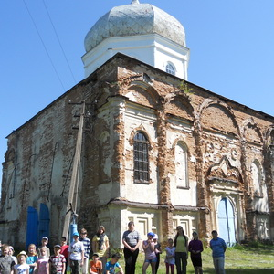
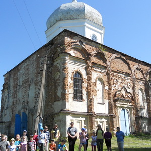
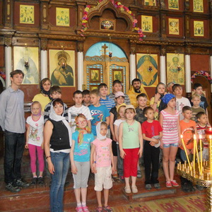
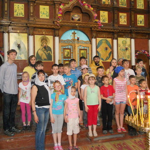
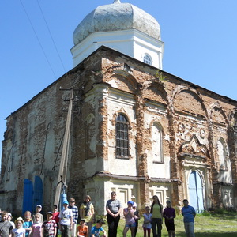
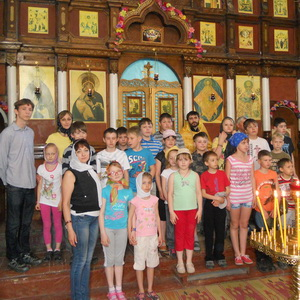

 

Наш гурток "Арго" у с. Могриця, Сумського району. Ми побували на крейдяних горах, де шукали різні мушлі, та запускали повітряного змія.
В Могрицькому лісовому господарстві бачили медянку - це змія, але її укус не страшний для людини.
В цьому селі збудовано дві церкви, ми відвідали Володимирську церкву, збудовану в 1844 році, цей храм має унікальну архітектуру, та цікаву історію.


Подорожуючи по Путивлю, ми відвідали "Музей партизанської слави", та побували в Молченському печерському жіночому монастирі УПЦ.
Нам показали землянку часів ВВВ, самохідну артилерійську установку, пам'ятник Ярославни та багато іншого.


Під час подорожі гуртка "Арго" в Полтаву, ми відвідали національний-заповідник українського гончарства в Опішному, який знаходиться у с.м.т. Опішня, Полтавської області. Кожен мав можливість спробували самостійно зліпити маленькі горщики.
Також нам подарували по маленькій глиняній сопілці.


Сторінка створена Корчакою Анастасією.:)